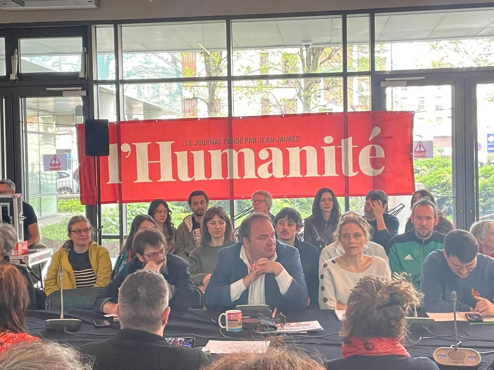
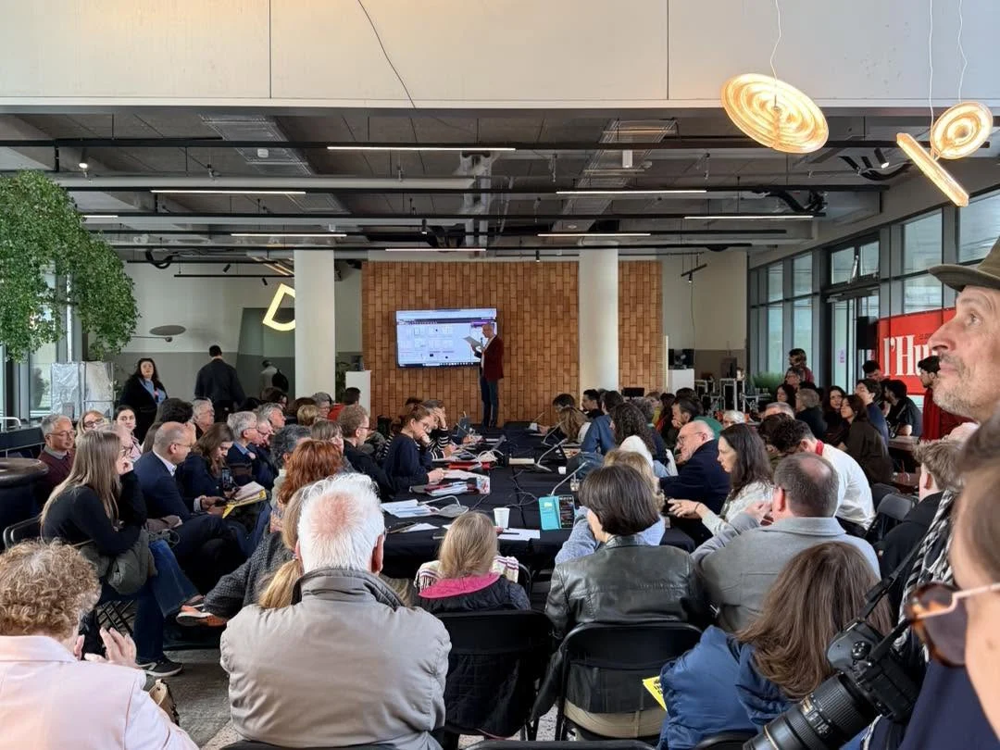
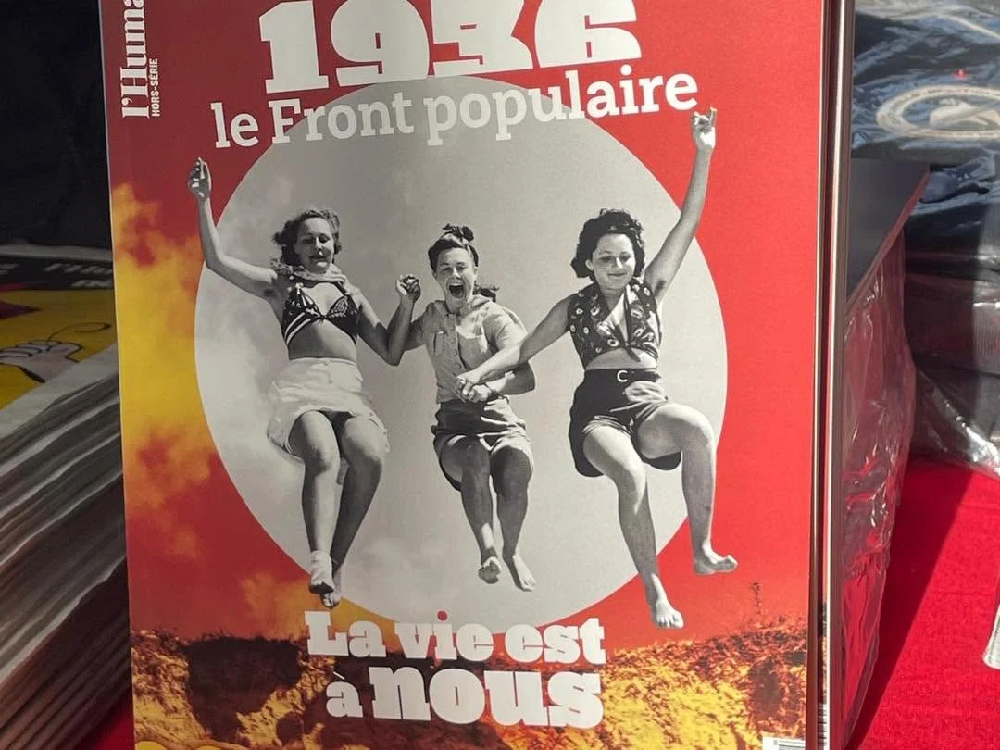
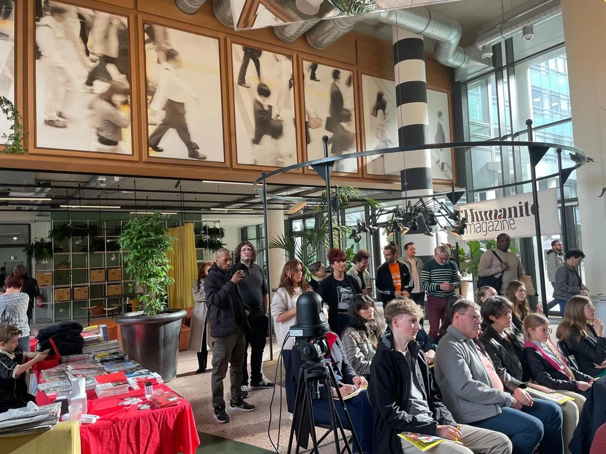
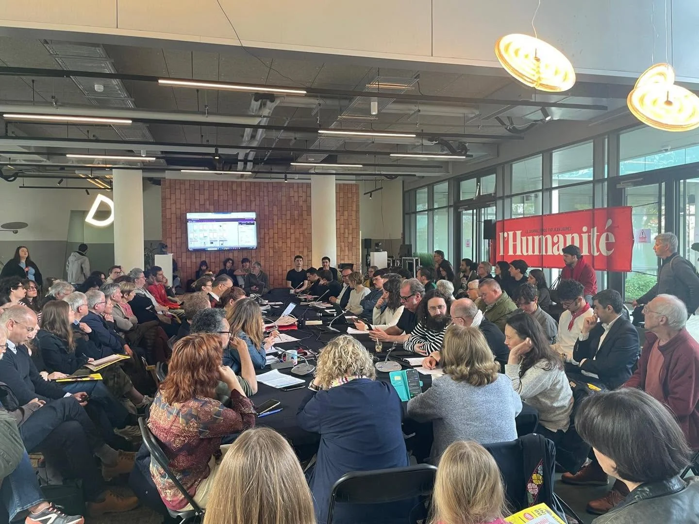
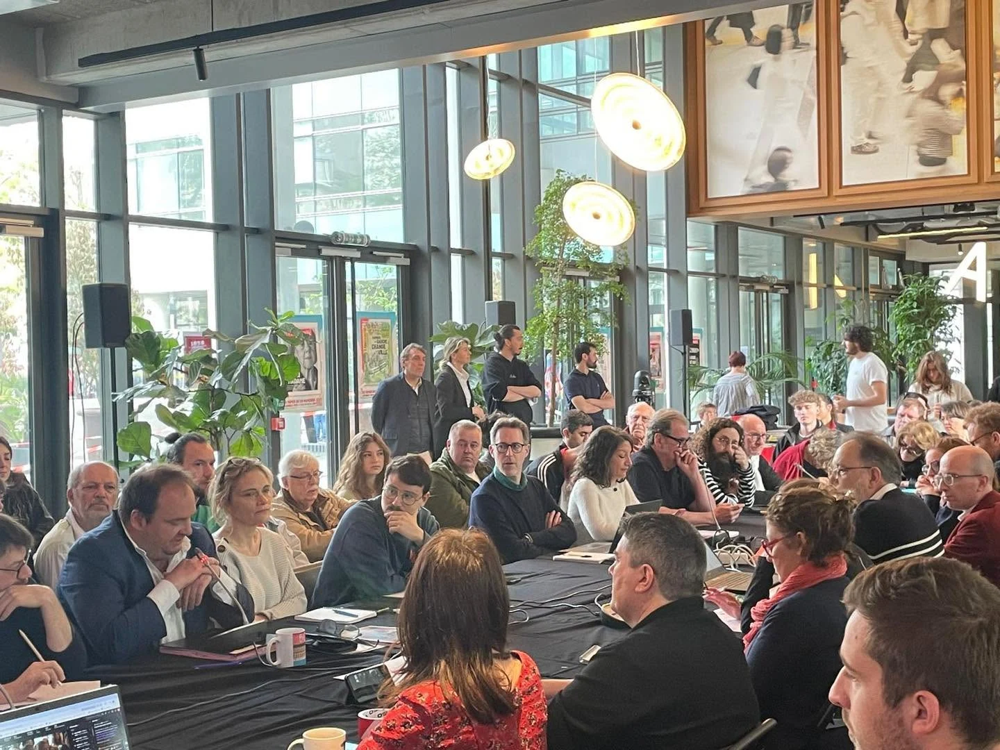
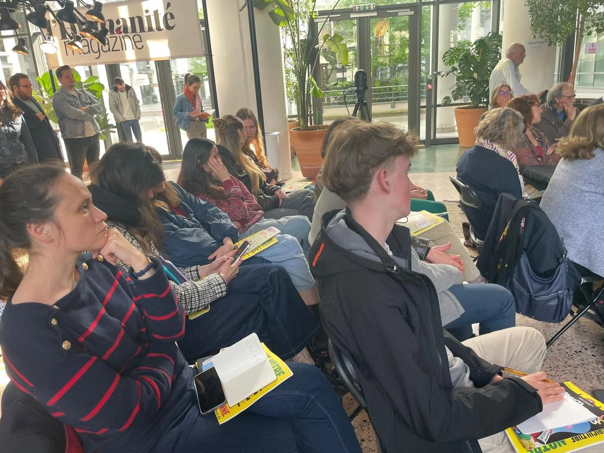
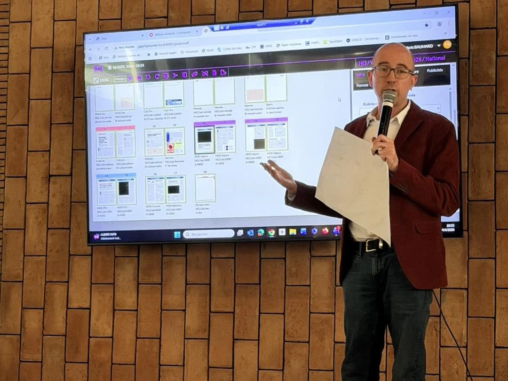

Publication relayée par le PCF 79
Les portes ouvertes de L’Humanité pour les 122 ans du journal
Date de mise à jour indiquée par Facebook · 17 avril 2026
Texte de la publication · Fabien Gay
L’Humanité fête ses 122 ans ce samedi !
Pour la troisième année consécutive, nous avons organisé ce matin, une journée portes ouvertes avec nos lectrices et lecteurs, en direct sur Twitch.
La conférence de rédaction se déroule au milieu de nos lectrices et lecteurs : après un vrai débat, ce sont elles et eux qui choisissent les sujets qui paraîtront demain dans le journal papier.
Cette année, L’Humanité va poursuivre sa transformation, notamment sur le numérique et la vidéo. Dans les prochaines semaines, nous reviendrons vers vous, pour vous informer de ces évolutions.
Notre but reste inchangé : permettre à chacune et chacun de se forger une opinion libre et éclairée sur le monde qui nous entoure, à partir d’informations fiables et vérifiées, et de participer à la transformation de la société et du monde.
Un immense merci aux équipes du journal pour l’organisation de cette journée, et à l’Accueil-Sécurité du Parti qui nous a permis d’accueillir tout le monde dans d’excellentes conditions.








Sources
Fabien Gay · publication relayée par le PCF 79 · bibliothèque Facebook · AR-0002-FB-00815
À lire aussi · Pass culture, non à la punition collective ! · Le lien d’origine